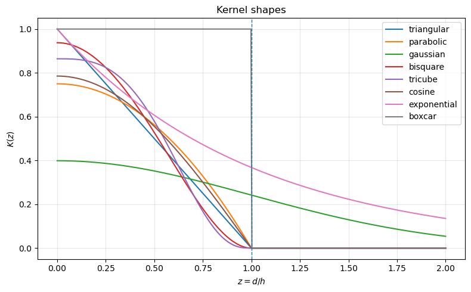
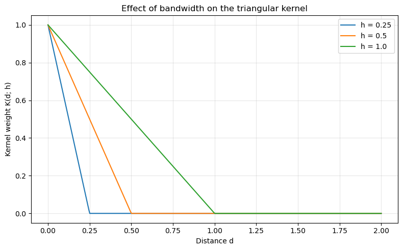
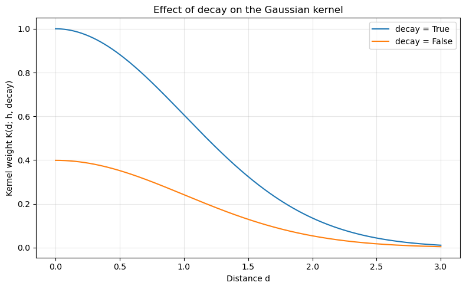
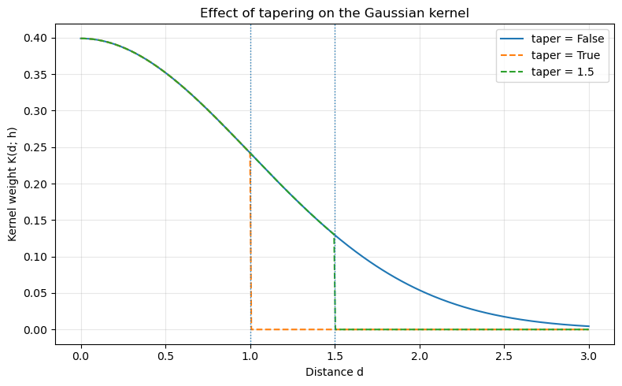

Kernels with libpysal¶
Kernel functions are widely used across spatial analysis for tasks such as density estimation, spatial smoothing, construction of local influence surfaces, and geographically weighted modeling. They provide a flexible mechanism to formalize how spatial influence decays with distance, allowing analysts to encode different assumptions about locality, neighborhood structure, and the scale of spatial interaction.
Within the PySAL ecosystem, kernel functions are used primarily for generating spatial weights matrices—especially continuous, distance-decay–based weights—and for defining weighted edges in spatial graph representations. They also appear in certain spatial econometric estimators that require localized or tapered weighting schemes to model distance-dependent interactions and spatial heterogeneity more realistically.
This notebook illustrates the functionality of kernels in libpysal.
Setup¶
import matplotlib.pyplot as plt
import numpy as np
from libpysal import kernels
np.set_printoptions(precision=4, suppress=True)
Available Kernels¶
For a distance (d) and bandwidth (h), kernels are evaluated on the rescaled distance
The following kernel functions are implemented using one-dimensional definitions with \(K(z)=0\) outside the stated support:
Triangular (“triangle”)
Uniform (“boxcar”)
Quadratic (Epanechnikov / “parabolic”)
Quartic (biweight / “bisquare”)
Tricube (“tricube”)
Gaussian
The helpers in kernels.py adopt the same functional forms, but add optional arguments such as
decay and taper to control how quickly weights decline with distance and whether the kernel is
truncated at the bandwidth.
Interpretation of Kernel Functions¶
Kernel functions differ in smoothness, support, and rate of decay. These properties influence how local or global the resulting spatial weights are.
Triangular kernels decline linearly from peak to zero at the bandwidth. They generate moderate smoothing with sharp locality.
Uniform (boxcar) kernels assign equal weight to all neighbors within the bandwidth and zero beyond. This is equivalent to binary distance-band weights and does not provide smoothing inside the band.
Quadratic (parabolic) kernels decline smoothly and balance locality with smoothness. They are frequently used in nonparametric estimation due to favorable statistical properties.
Quartic (bisquare) kernels have a steeper decline and place more weight on very close neighbors while still providing smooth, compact support.
Tricube kernels are similar to bisquare but with an even steeper decline near the boundary. They are commonly used in locally weighted regression (LOESS/LOWESS) and geographically weighted regression (GWR) due to their smooth, compact support and favorable weighting properties.
Gaussian kernels provide infinite support and the smoothest decay. Weights never drop to zero without tapering, which can lead to denser spatial weight matrices.
Compactly supported kernels yield sparse matrices and emphasize strict locality. Infinite-support kernels yield smoother influence but may require tapering for computational efficiency. The rate of decline determines how “local” the smoothing will be in practice.
Below we plot several common kernels implemented in libpysal.
functions = [
"triangular",
"parabolic",
"gaussian",
"bisquare",
"tricube",
"cosine",
"exponential",
"boxcar",
]
h = 1.0 # bandwidth
d = np.linspace(0, 2 * h, 400)
plt.figure(figsize=(8, 5))
for fn in functions:
k = kernels.kernel(d, bandwidth=h, kernel=fn, taper=False)
plt.plot(d / h, k, label=fn)
plt.axvline(1.0, linestyle="--", linewidth=1)
plt.xlabel("$z = d / h$")
plt.ylabel("$K(z)$")
plt.title("Kernel shapes")
plt.legend()
plt.grid(True, alpha=0.3)
plt.tight_layout()
plt.show()

Exploring alternative kernels and bandwidths¶
You can repeat the previous steps using different kernel functions and bandwidth strategies to see how they affect the spatial lag.
For example:
w_gauss_fixed = Kernel(coords, k=8, fixed=True, function="gaussian")
w_gauss_fixed.transform = "r"
lag_gauss = lag_spatial(w_gauss_fixed, y)
# Plot `lag_gauss` and compare.
A typical set of experiments for a spatial analysis project might include:
Trying different kernels (triangular, Gaussian, bisquare, etc.).
Varying the number of neighbors
k.Comparing fixed vs. adaptive bandwidth.
Examining how these choices impact local statistics, regression residuals, or risk surfaces.
Bandwidth¶
The bandwidth parameter controls the spatial scale of the kernel. In the notation used earlier, the
kernel is evaluated on the rescaled distance
where h is the bandwidth. Smaller bandwidths produce more localized weights (steeper decay), while
larger bandwidths produce broader, smoother influence functions.
Below we compare triangular kernels with three different bandwidths on the same distance axis.
d = np.linspace(0, 2, 400) # absolute distance
bandwidths = [0.25, 0.5, 1.0]
plt.figure(figsize=(8, 5))
for h in bandwidths:
k_vals = kernels.kernel(d, bandwidth=h, kernel="triangular", taper=False)
plt.plot(d, k_vals, label=f"h = {h}")
plt.xlabel("Distance d")
plt.ylabel("Kernel weight K(d; h)")
plt.title("Effect of bandwidth on the triangular kernel")
plt.legend()
plt.grid(True, alpha=0.3)
plt.tight_layout()
plt.show()

Decay¶
For the Gaussian kernel, the decay argument determines whether to calculate the kernel using the decay formulation.
In the decay form, a kernel measures the distance decay in
similarity between observations. It varies from maximal
similarity (1) at a distance of zero to minimal similarity (0
or negative) at some very large (possibly infinite) distance.
Otherwise, kernel functions are treated as proper
volume-preserving probability distributions.
Here we fix the bandwidth and compare Gaussian kernels with different decay values.
d = np.linspace(0, 3, 400)
h = 1.0
decays = [True, False]
plt.figure(figsize=(8, 5))
for dec in decays:
k_vals = kernels.kernel(d, bandwidth=h, kernel="gaussian", decay=dec, taper=False)
plt.plot(d, k_vals, label=f"decay = {dec}")
plt.xlabel("Distance d")
plt.ylabel("Kernel weight K(d; h, decay)")
plt.title("Effect of decay on the Gaussian kernel")
plt.legend()
plt.grid(True, alpha=0.3)
plt.tight_layout()
plt.show()

Taper¶
The taper argument is particularly relevant for unbounded kernels (e.g., Gaussian, exponential).
When taper=False, the kernel has non-zero weight at all distances (in principle), although weights
may become very small. When taper=True, the kernel is truncated at the bandwidth h, so weights
are exactly zero for d > h. When taper=c, where c is a numeric value (float or int),
the kernel is truncated at that specific distance threshold, so weights are exactly zero for d > c.
This can make the resulting spatial weights matrix sparser and improve computational efficiency, while still preserving the basic shape of the kernel within the bandwidth.
Below we compare a Gaussian kernel with and without tapering.
d = np.linspace(0, 3, 400)
h = 1.0
c = 1.5
k_notaper = kernels.kernel(d, bandwidth=h, kernel="gaussian", taper=False)
k_taper = kernels.kernel(d, bandwidth=h, kernel="gaussian", taper=True)
k_taper_custom = kernels.kernel(d, bandwidth=h, kernel="gaussian", taper=c)
plt.figure(figsize=(8, 5))
plt.plot(d, k_notaper, label="taper = False")
plt.plot(d, k_taper, linestyle="--", label="taper = True")
plt.plot(d, k_taper_custom, linestyle="--", label="taper = 1.5")
plt.axvline(h, linestyle=":", linewidth=1)
plt.axvline(c, linestyle=":", linewidth=1)
plt.xlabel("Distance d")
plt.ylabel("Kernel weight K(d; h)")
plt.title("Effect of tapering on the Gaussian kernel")
plt.legend()
plt.grid(True, alpha=0.3)
plt.tight_layout()
plt.show()
